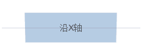
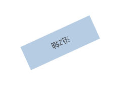
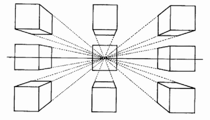

css3的3D起步
必须了解几个词汇，便是透视(perspective)、旋转(rotate)和移动(translate)。透视即是以现实的视角来看屏幕上的2D事物，从而展现3D的效果。旋转则不再是2D平面上的旋转，而是三维坐标系的旋转，就包括X轴，Y轴，Z轴旋转。平移同理。
下面是3个gif：
- 沿着X轴旋转: 
- 沿着Y轴旋转:

- 沿着Z轴旋转: 
旋转应该没问题了,那理解平移起来就比较容易了，就是在在X轴、Y轴、z轴移动。
perspective
perspective英文名便是透视，没有这东西就没办法形成3D效果，但是这个东西是怎么让我们浏览器形成3D 效果的呢，可以看下面这张图，其实学过绘画的应该知道透视关系，而这里就是这个道理.  但是在css里它是有数值的，例如perspective: 1000px这个代表什么呢？我们可以这样理解，如果我们直接眼睛靠着物体看，物体就超大占满我们的视线，我们离它距离越来越大，它在变小，立体感也就出来了是不是，其实这个数值构造了一个我们眼睛离屏幕的距离，也就构造了一个虚拟3D假象。
perspective-origin
由上面我们了解了perspective，而加上了这个origin是什么，我们前面说的这个是眼睛离物体的距离，而这个就是眼睛的视线，我们的视点的不同位置就决定了我们看到的不同景象，默认是中心，为perspectice-origin: 50% 50%,第一个数值是 3D 元素所基于的 X 轴，第二个定义在 y 轴上的位置.当为元素定义 perspective-origin 属性时，其子元素会获得透视效果，而不是元素本身。必须与 perspective 属性一同使用，而且只影响 3D 转换元素
transform-style
transform-style默认是flat，如果你要在元素上视线3D效果的话，就必须用上transform-style: preserve-3d,否则就只是平面的变换，而不是3D的变换
<div class="container">
<div class="piece-box">
<div class="pies c1"></div>
<div class="pies c2"></div>
<div class="pies c3"></div>
<div class="pies c4"></div>
<div class="pies c5"></div>
<div class="pies c6"></div>
</div>
</div>
.container {
-webkit-perspective: 1000px;
-moz-perspective: 1000px;
-ms-perspective: 1000px;
perspective: 1000px;
}
/*piece盒子*/
.piece-box {
position: relative;
width: 200px;
height: 200px;
margin: 300px auto;
perspective-origin: 50% 50%;
-webkit-transform-style: preserve-3d;
-moz-transform-style: preserve-3d;
-ms-transform-style: preserve-3d;
transform-style: preserve-3d;
-moz-animation: pieceRotate 5s;
-webkit-animation: pieceRotate 5s;
-o-animation: pieceRotate 5s;
animation: pieceRotate 5s;
}
.pies {
width: 200px;
height: 200px;
position: absolute;
opacity: 1;
}
.c1 {
background-image: url(imgs/s1.jpg);
background-size: 100% 100%;
-webkit-transform: rotateY(0deg) translateZ(173.2px);
-ms-transform: rotateY(0deg) translateZ(173.2px);
-o-transform: rotateY(0deg) translateZ(173.2px);
transform: rotateY(0deg) translateZ(173.2px);
}
.c2 {
background-image: url(imgs/s2.jpg);
background-size: 100% 100%;
-webkit-transform: rotateY(60deg) translateZ(173.2px);
-ms-transform: rotateY(60deg) translateZ(173.2px);
-o-transform: rotateY(60deg) translateZ(173.2px);
transform: rotateY(60deg) translateZ(173.2px);
}
.c3 {
background-image: url(imgs/s3.jpg);
background-size: 100% 100%;
-webkit-transform: rotateY(120deg) translateZ(173.2px);
-ms-transform: rotateY(120deg) translateZ(173.2px);
-o-transform: rotateY(120deg) translateZ(173.2px);
transform: rotateY(120deg) translateZ(173.2px);
}
.c4 {
background-image: url(imgs/s4.jpg);
background-size: 100% 100%;
-webkit-transform: rotateY(180deg) translateZ(173.2px);
-ms-transform: rotateY(180deg) translateZ(173.2px);
-o-transform: rotateY(180deg) translateZ(173.2px);
transform: rotateY(180deg) translateZ(173.2px);
}
.c5 {
background-image: url(imgs/s5.jpg);
background-size: 100% 100%;
-webkit-transform: rotateY(240deg) translateZ(173.2px);
-ms-transform: rotateY(240deg) translateZ(173.2px);
-o-transform: rotateY(240deg) translateZ(173.2px);
transform: rotateY(240deg) translateZ(173.2px);
}
.c6 {
background-image: url(imgs/s6.jpg);
background-size: 100% 100%;
-webkit-transform: rotateY(300deg) translateZ(173.2px);
-ms-transform: rotateY(300deg) translateZ(173.2px);
-o-transform: rotateY(300deg) translateZ(173.2px);
transform: rotateY(300deg) translateZ(173.2px);
}